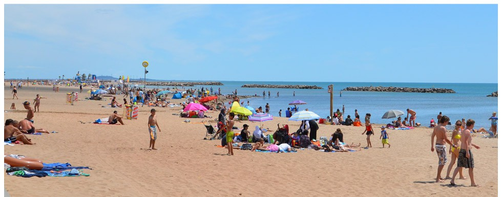
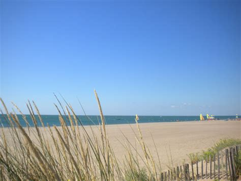
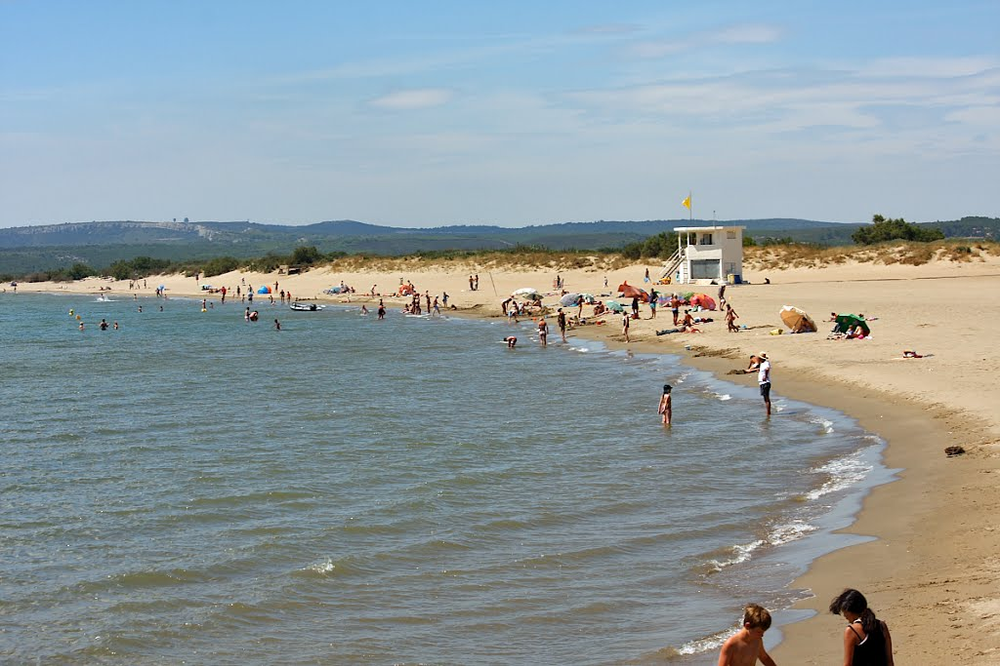

Local beaches
The sandy beaches of the Languedoc region are among the best beaches in Europe. Whether you are looking for a quiet spot to relax or a bustling stretch with entertainment for the kids, there is somewhere to suit everyone.
Serignan plage
Travel time: 10 minutes by car
At a distance of 7 kilometres, Serignan plage is the most accessible beach to the villa. You can cycle there in about 30 minutes, mostly on dedicated cycle paths. By car it takes about 10 minutes, with plenty of parking available. The beach is wide and very long, with lots of space.
The Eastern end is a supervised beach with a few shops and restaurants for buying refreshments, including the popular Latino beach restaurant.
At the Western end is our favourite stretch, Les Orpèllieres. The beach is backed by sand dunes and forms part of a nature reserve that borders the mouth of the river Orb. The beach is unsupervised but peaceful and secluded. It is a 5 minute walk across the heathland from the car park, but well worth the effort. Turn right as you approach Serignan plage, adjacent to a farm shop and follow the signs. If you haven't packed a picnic, Le Coin Gourmand in the Maison de Site des Orpellières sells local products including salads, cold meats, and cheeses.
Valras plage
Travel time: 15 minutes by car
Valras plage is a busy resort with many shops, bars, and restaurants. The supervised beach is busier than Serignan plage, but has plenty of facilities including watersports hire and children's play areas. It's definietly a good destination for a family with young children.

Vendres plage
Travel time: 15 minutes by car
Vendres plage stretches from Valras plage all the way to the port of Chichoulet at the mouth of the Aude river. Although the beach supports several camp sites, it is so vast that there is plenty of space for everyone. One advantage it has over Valras plage is easier parking. There are also some very nice seafood restaurants at the port that cook and serve the day's catch.

Les Cabanes de Fleury
Travel time: 20 minutes by car
To reach this stretch of sandy beach you must travel a short distance up the Aude river from the port of Chichoulet to cross over at the bridge, Pont de la Pistoule. The first stretch of beach is supervised but gives way to a wilder, more rugged section that stretches infinitely into the distance.

The pretty commune of Les Cabanes has a few restaurants for refreshments.